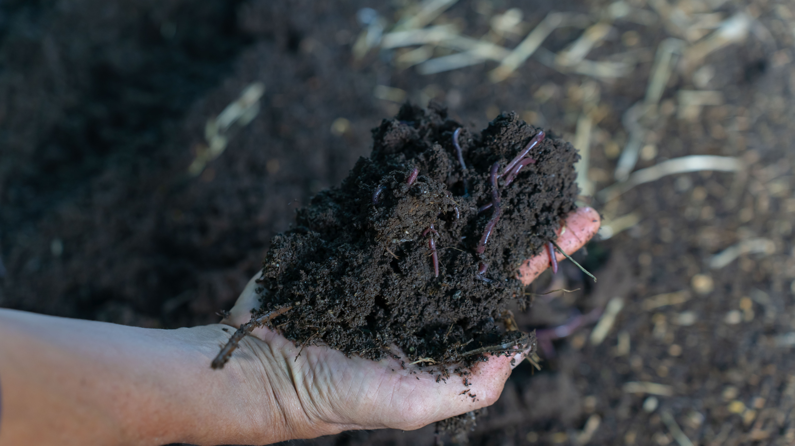

Ý Nghĩa Và Lợi Ích Của Trùn Quế Trong Nông Nghiệp
Trùn quế giữ vai trò quan trọng trong nông nghiệp hữu cơ và tuần hoàn. Chúng ăn phân chuồng, rác hữu cơ và thải ra phân trùn – loại phân giàu dưỡng chất, giúp cây trồng phát triển tự nhiên, không cần đến phân hóa học. Nhờ trùn quế, chu trình sản xuất được khép kín, giảm phát thải khí nhà kính và ô nhiễm môi trường. Nuôi trùn còn mang lại hiệu quả kinh tế cao từ vốn thấp, dễ triển khai. Người nông dân có thể thu lợi từ nhiều sản phẩm: trùn giống, trùn thịt, phân trùn, nước rỉ trùn. Ngoài việc cải tạo đất, trùn còn góp phần xây dựng hệ sinh thái nông nghiệp xanh – sạch – bền vững. Đây là mô hình phù hợp với xu hướng nông nghiệp hiện đại, thân thiện môi trường và tăng giá trị sản phẩm.